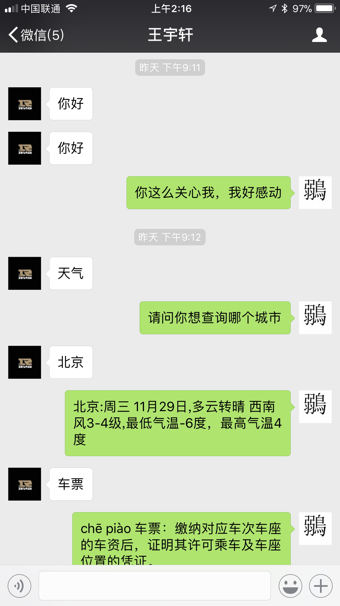
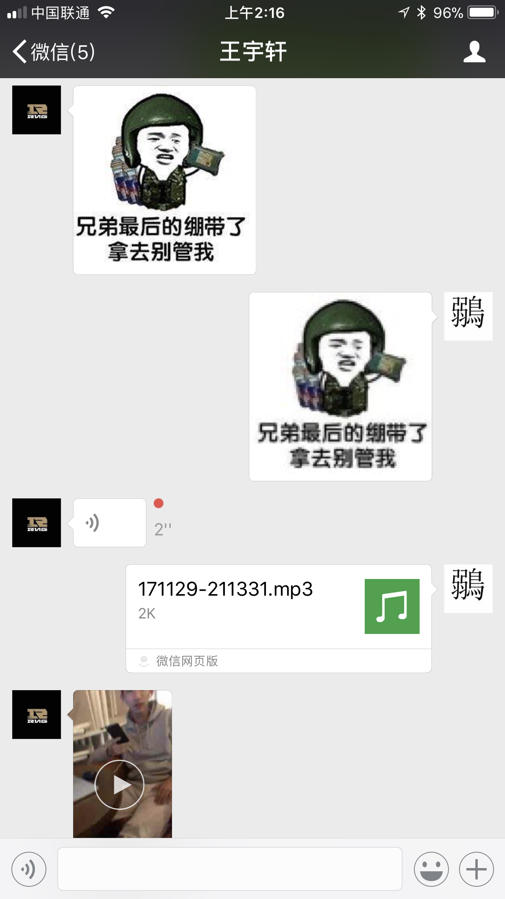

import requests import itchat from PIL import ImageFilter from itchat.content import * KEY = '6f139df5ae924b0fa084e938eca83de8' def get_response(msg): apiUrl = 'http://www.tuling123.com/openapi/api' data = { 'key' : KEY, 'info' : msg, 'userid' : 'wechat-robot', } try: r = requests.post(apiUrl, data=data).json() if r.get('code')==100000: return r.get('text') elif r.get('code')==200000: return r.get('text')+r.get('url') except: return @itchat.msg_register([TEXT]) def tuling_reply(msg): defaultReply = 'I received: ' + msg['Text'] reply = get_response(msg['Text']) return reply or defaultReply @itchat.msg_register([RECORDING, ATTACHMENT, VIDEO]) def download_files(msg): msg.download(msg.fileName) typeSymbol = { PICTURE: 'img', VIDEO: 'vid'}.get(msg.type, 'fil') return '@%s@%s' % (typeSymbol, msg.fileName) @itchat.msg_register([PICTURE]) def download_files(msg): pic=msg.download(msg.fileName) pic=pic.convert("RGB") pic=pic.filter(ImageFilter.BLUR) typeSymbol = { PICTURE: 'img', VIDEO: 'vid', }.get(msg.type, 'fil') return '@%s@%s' % (typeSymbol, pic) itchat.auto_login(hotReload=True) itchat.run()
2. Picture example


Since I tested this bot in the afternoon, it didn't test the function I add later tonight. And since my second wechat account is banned and my bot doesn't reply when I send message to myself, so I need to test other functions tomorrow.
3. Flow chart and reflection

It’s the first time I get in touch with Api and third party’s database. It’s really excited to know how does the newest technology work and try it on my own. It’s also excited to know how to combine computer’s program with mobile’s app. Also, it’s good to know another way to develop my wechat account, adding more functions to make it more convenient to use.
Also, doing this project helped me revise some python knowledge I had forgot since I didn’t review much. I picked up type dictionary’s basic knowledge. I remembered the “key” and the “value” in the dictionary type once again. I also revised some basic python functions and grammar that I forgot how do they work. This project helped me pick up python and be more used to it again.
What’s really important is I learned itchat’s register will be varied if data received or response is varied. For url, pictures, videos, attachment and other data type, the registers used in Itchat are different. What’s more, different API’s will have different code or rules to access data. For example, Tuling API require code for different data response. 100000 stands for text, 200000 stands for message contained url. So, next time I improve my chatbot, I will consider the register and the rules for different API to implement different functions.
Finally, I also learned more about finding solutions for different CS problem and digging sources. I also knew better how to utilize the open sources to help improve my projects. I believe these skills are very useful for my future CS study.